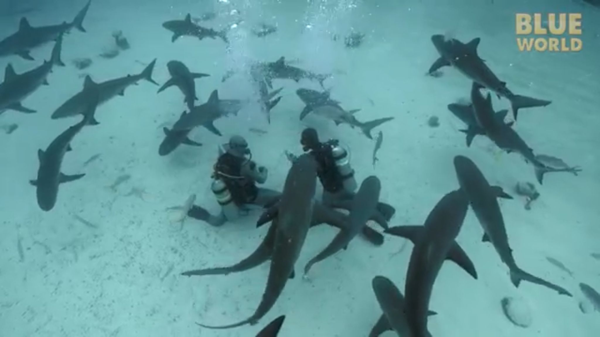
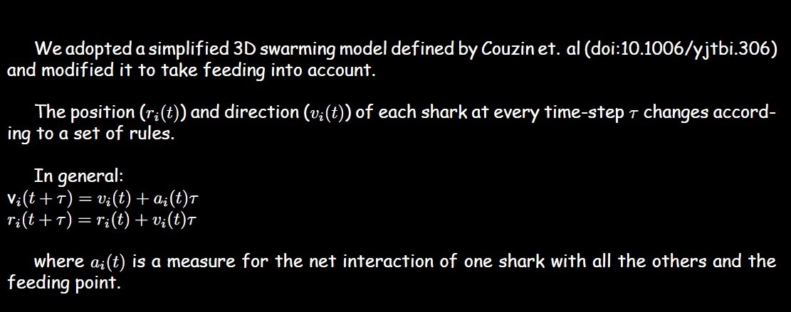
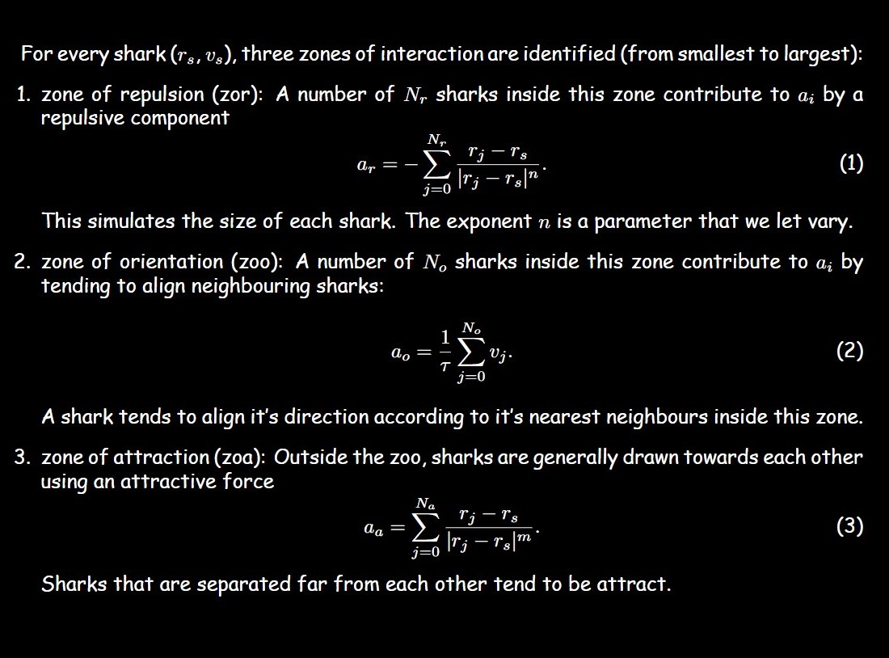
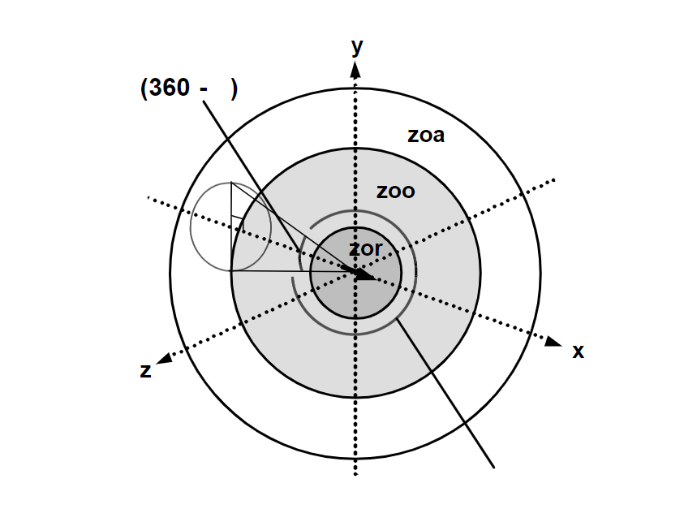
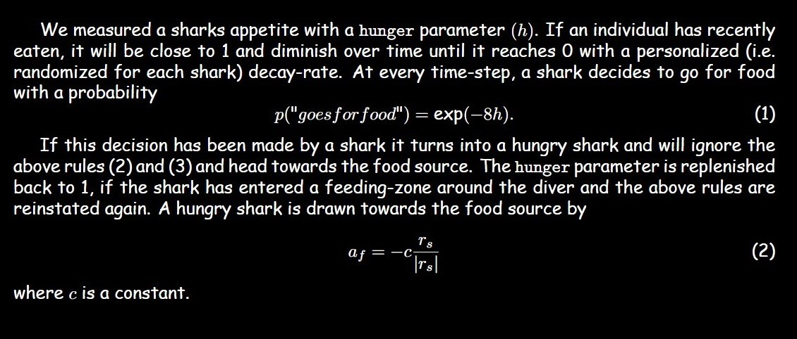
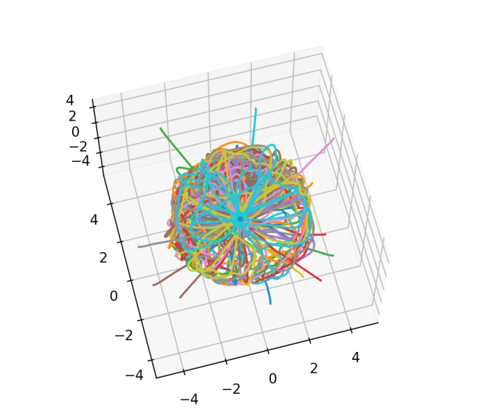
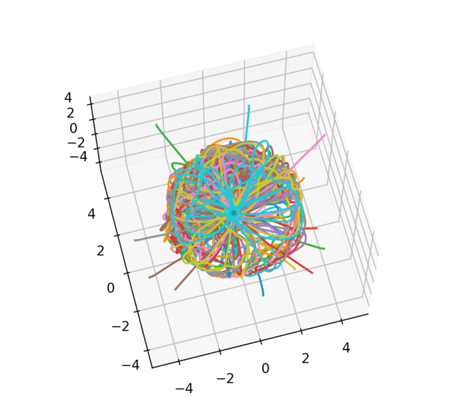
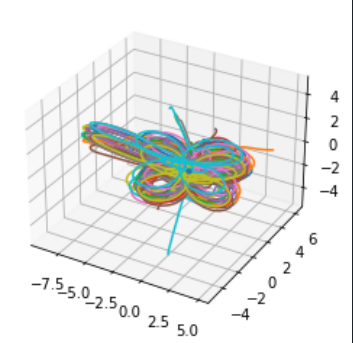
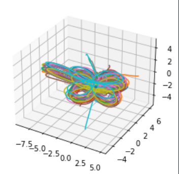

A Case Study in Artistic Synergetics: Creating art by simulating shark-feeding dynamics using a modified Swarming model
Our Project
Ancient creatures roam through the depths and breadths of ocean basins. Their size, their jaws, their might, and their electroreceptive abilities are some of the qualities that inspire both awe and fear of these apex predators.
In contrast to cultural depictions of the lone hunter, many shark species hunt collectively. Ecologist Mourier argues this feeding pattern is a demonstration of how "sharks can use collective behavior with simple rules to benefit and increase their fitness".
Our objective, then, was to simulate sharks gathering around a feeding ground in order to assess potentially relevant parameters governing these 'simple rules' in collective hunting.
Our inspiration were patterns we observed in a documentary in which divers would regularly feed sharks in the Bahamas for research purposes. See the figure below for a snapshot from the documentary

The Model

Modeling Shark-Shark Interactions:


Modeling Shark-Food Interactions:

The Visualization
Art moves the soul . The collective movement of sharks produces a simple yet mesmerizing pattern of dynamic interactions, balanced between attraction towards the food source and repulsion in space from others, to yield a state in which nourishment of the soul is achieved, both of the sharks, and of the perceiver.
The feeding patterns of sharks are art in of themselves. By mapping the collective feeding patterns of 20 sharks, we were able to harness the sharks' artistic talents to create art pieces of our own.
 

 
